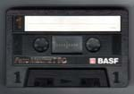
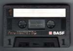
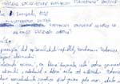
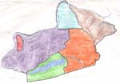
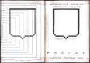
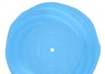

|
 |
retrokruh krvik totr |
|
 |
retrokruh krvik totr |
|
  |
|
1993: Krvik Totr zahodili socialistickou tematiku a vymysleli rozhlasovou parodii na vlastní stanicí Naše Rádio 86,9 FM, kde ovšem z vìtší èásti pøedìlávali oblíbené scénky oblíbených komikù. |
|
Rozhovor s Tetou Lídou • mp3 Teta Lída: Haló! Petr: Dobrý den, tady je Naše Rádio 86,9 FM-VKV. Teta Lída: A co si pøejete? Já jsem tady, eh, tady Lída Kotyzová, já bydlím tady ve Vokovicích, no a mám dceru, co, eh, vlastnì, co vy si vlastnì pøejete, ještì ke všemu, bych se chtìla zeptat. Petr: Já jsem se chtìl zeptat, jestli máte psa. Teta Lída: No psa máme. Petr: A dceru? Teta Lída: Dceru taky. To je Janièka, ona èetla takovou pìknou knížku od pana Miroslava Švandrlíka a ono se jí to líbilo, tak jsem to dala svýmu známýmu, teda klukovi mý kamarád... teda známýmu mý kamarádky, teda, houby, synovi mý kamarádky a ono se mu to taky líbilo, takže dceru mám a je jí nìkolik let a líbìj se jí knížky od Švandrlíka. Petr: A dáváte jim šanci? Teta Lída: No tak tìm knížkám šanci dávám, tím že jí je poøád kupuju a pak je dávám tomu známýmu tý kamará... teda synovi tý kamarádky, protože oni psa nemaj, tak jim musím pùjèovat Švandrlíka, a on se mu furt líbí a taky poslouchá Genesis, Genesis, Genesis, Genesis, no a to je moje kamarádka, ta zase poslouchá Haydn, Haydn, Haydn a Beethoven. Ale to jen tak na okraj, to je vedlejší. Petr: No a co si myslíte o svých klíèích od bytu? Teta Lída: No tak, moje klíèe... no, já nevím jako, tady - tady, eh, podívejte se, tady takový kroužky no a tady navlíkám ty klíèe, no a ty klíèe jsou docela nìkdy barevný, já jsem si je nechala udìlat u takovejch tìch, tìch - fialový, zelený, èerný dìlaj, tak takový jsem si nechala udìlat, tak tady ten, ten je od sklepa, to se podívejte, takovej pìknej, jo vlastnì vy nevidíte, tak sorry, puète-kupte si brejle, no a tady ty, ty prodavaèi za to chtìj strašnì penìz, takže v tý dnešní dobì ten èlovìk na to vùbec nemá peníze, on je nezamìstnanej a chtìj, aby platil tøeba za mlíko, jo, padesát korun, teda to jenom nìkde, no a, takže - vlastnì teï k tìm klíèùm, ty klíèe... (Ozývá se šum z telefonu.) Co tak funíte? (Dál se ozývá šum.) Ty klíèe, ty jsou, jaksi trochu, no co si o nich myslím, no jsou to docela pìkný, ale drahý, a na tu dnešní dobu až moc drahý. (Z druhého konce telefonu se ozývá šumìní a nesrozumitelné zvuky moderátora.) Prosím vás, co s tím máte? (Mlátí do telefonu.) Co s tím máte? Co s tím máte, sakra! Petr: (Nìkolik slov vyjde z šumu.)
Já prosím... (Šum.) Slyšíte
mì? (Šum.) Teta Lída: No špatnì, ale slyším, trochu. Petr: (Šum.) Víte, kde to je?
(Šum.) Teta Lída: Nevím, to bude asi u vás, protože já teïkonc slyším dobøe a teï ne zase. Petr: (Šum. Nesrozumitelná
slova.) Teta Lída: Prosím? Petr: (Šum.) To je inkognito. (Šum.) Teta Lída: Cože? Petr: (Šum.) Slyšíte mì? (Šum.) Teta Lída: Trochu. Petr: (Šum.) Haló! (Šum.) Teta Lída: Teï vás neslyším vùbec. Petr: (Šum. Nesrozumitelné
zvuky.) Teta Lída: Sakra, udìlejte s tím nìco. Petr: (Šum. Nesrozumitelné
zvuky.) Teta Lída: Cože? Já vás vùbec neslyším! Petr: (Náhle vyjde z šumu.) Naše Rádio 86,9 FM. Teta
Lída: Haló? Co dìláte, lidi! To jsou dneska lidi, to jsou rádia,
dneska... (Položí.) © 1993 Krvik Totr Music |
Z dobového tisku: Gottwaldova
fontána Krvik
Totr se dali u ušaøe slyšet, že zakoupí od Výstavištì Køižíkovu
fontánu. Když jim øekl, že jsou blázni, došel jim plnì význam
jejich slov a podnikli krok. Výstavištì i Ministerstvo kultury se
bránily, ale Krvik Totr jim pøedhodili ledabyle zfalšovaný podpis
p. Køižíka (získaný prý vyvoláním jeho ducha na nedalekém záchùdku),
jejž hloupá komise ministerstva pøijala jako pravý. Nuže, konec
je barvitým koncertùm – Krvik Totr zde míní vybudovat køižíkové
láznì pro vysloužilé zasloužilé tramvajáky. Rozhodli se nicménì
udržet bývalou hudební poetiku programem, jež nasadí každé úterý
o pùl tøetí ráno: soubor sovìtských písní, jejž budou zpívat
bývalí èlenové Alexandrovcù (nyní mrtví, již brzy však
exhumusovaní) odìni do neprodyšných mikroprénù (kromì pusy ovšem),
doplní svìtelná šou o jedné narudo naèervenìné žárovce.
Zavzpomínat mùžete pøijít zdarma, pouze u vrátného, který je
ze všech nejdùležitìjší, pøedložte bez vyzvání èlenství ve
Stranì. Pokud
se celá akce ujme – totiž, až se celá akce ujme, Krvik |Totr plánují
vyprdìt Køižíka podruhé a pro podobnì zvrhlý plán urvat pražskou
tramavajovou dopravu – no možná i tu malajskou. Na celé toto mají vydìlat reklamy v Našem Rádiu 86,9 FM, rozhlasové stanici vyvlastnìné rovnìž Krvik Totr. |
© 2003 Krvik Totr Limity.